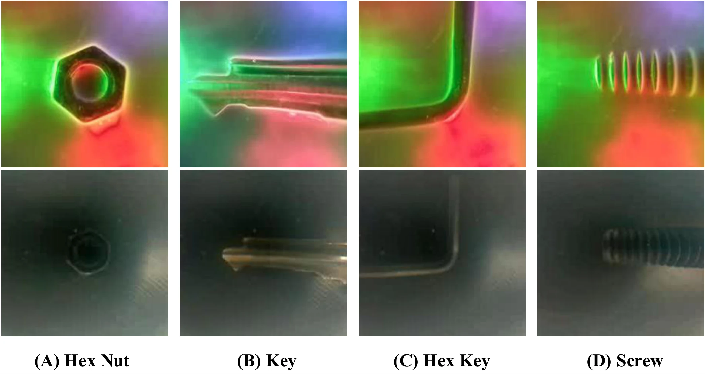
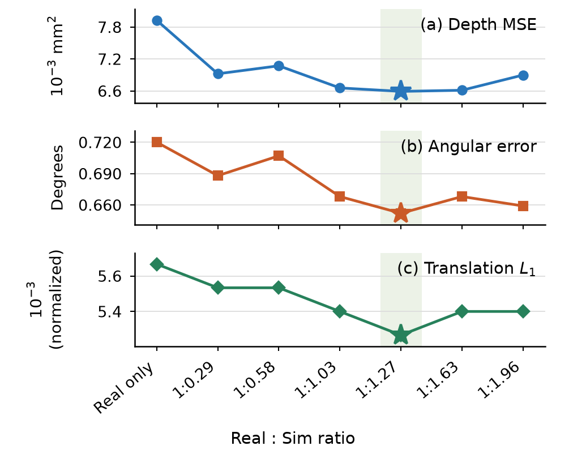

{kind=link}
Depth MSE
61.2% reduction
0.0170 → 0.0066 mm²
One fingertip camera. Two observation states. Object pose and contact geometry from either, or both.

Full abstract and details are in the paper.
Built on the GelSlim 4.0 body, the sensor replaces the opaque skin with a two-layer silicone membrane: a clear elastomer base and a thin, continuous UV-responsive layer at the contact surface. UV LEDs replace the blue illumination channel, and a driver PCB switches them in sync with image capture.
 Enlarge figure ↗
Enlarge figure ↗

Enlarge figure ↗The UV-reactive layer is spin-coated across the whole interface. There are no clear windows, markers, or moving parts, so the tactile image keeps full-field contact detail.
The camera and lens never move between modes. Both images share pixel coordinates, which lets the estimator associate appearance with contact without extrinsic calibration.
More than 45,000 normal indentations at 20 N produced no cracking, delamination, or loss of the UV-induced state change.
Pose and geometry need different things from the tactile image: a global summary for pose, and spatially resolved features for depth and normals. VisTacFusion keeps these paths separate and lets a compact visual bottleneck condition both.
 Enlarge figure ↗
Enlarge figure ↗
SITR-B/16 encodes touch and MAE-L/16 encodes vision. Only the projections, fusion trunk, and heads are trained.
Sixteen bottleneck tokens read the visual memory. Over four layers, tactile-initialized queries attend to the bottleneck and to each other; the final pose token and pooled spatial queries predict rotation and translation.
Tactile features from encoder blocks 3, 6, 9, and 12 bypass the query trunk. Each receives a zero-initialized gated update from B4 before a DPT decoder predicts depth and normals.
Modality dropout trains the same weights on paired, tactile-only, and visual-only inputs (sampled at 70 / 25 / 5%), so a single checkpoint serves all three at inference.
Real validation data from 12 known objects, within-session. Depth and normals use the depth-selected checkpoint; rotation and translation use the angle-selected checkpoint. Each checkpoint is evaluated in all three input modes without reselection.
61.2% reduction
0.0170 → 0.0066 mm²
72.3% reduction
2.350° → 0.652°
61.3% reduction
0.0137 → 0.0053
Same VisTacFusion checkpoints, different inputs. Touch dominates contact-depth accuracy; vision dominates orientation; the pair is best on every metric.
| Model | Depth MSE mm² ↓ | Normal MSE ↓ | Rotation L₁ ↓ | Angular error degrees ↓ | Translation L₁ normalized ↓ |
|---|---|---|---|---|---|
| VisTacFusion | 0.0066 | 0.0074 | 0.0129 | 0.652 | 0.0053 |
Lower is better. Bold marks the lowest paired-input error. † Shared weights across input modes within each task-selected checkpoint; unmarked single-modality rows are dedicated models. TVL+MAE and Sparsh-X+MAE swap the tactile encoder into our architecture; VITaL and MViTac are adapted implementations, and MViTac predicts pose only. Table II of the paper gives full details.
 Enlarge figure ↗
Enlarge figure ↗

Enlarge figure ↗Co-training with Blender renders and generated tactile images lowers depth MSE from 0.0079 to 0.0066 mm² and angular error from 0.720° to 0.652° over real-only training. Adding more simulation past 1:1.27 stops helping, consistent with residual sim–real appearance gaps in proximity mode.
Across four tactile encoders, MAE gives the lowest depth and angular errors every time. SITR+MAE minimizes depth MSE and is the configuration we report; DAv2+MAE minimizes angular error (0.618°).
With identical encoders and heads, our bottleneck fusion lowers paired angular error from 0.747° (symmetric MBT) to 0.652°, while MBT keeps a small edge in depth and normal MSE.
@inproceedings{gelslim5,
title = {GelSlim 5.0: Unifying Vision and Touch
with a Single Fingertip Camera},
author = {Anonymous},
booktitle = {Under review},
year = {2026}
}{kind=link}